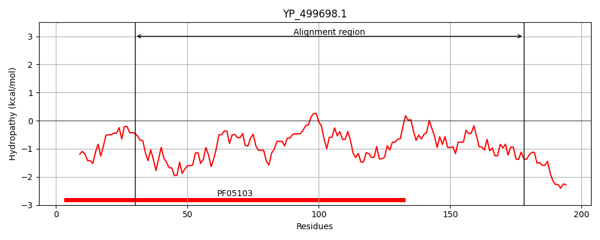
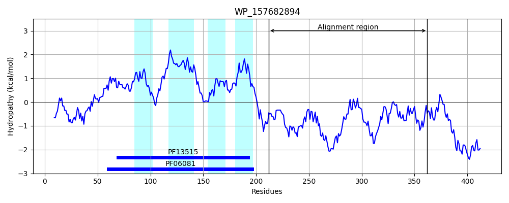
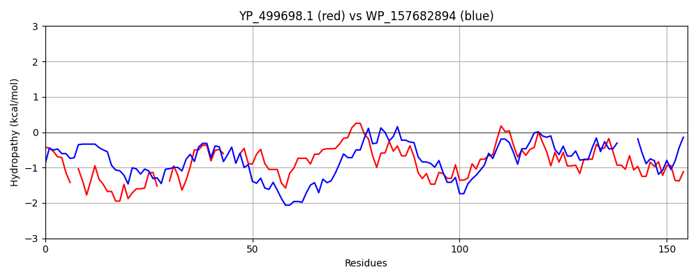

Hit Accession: WP_157682894
Hit TCID: 2.A.85.9.2
Hit Description: gnl|BL_ORD_ID|22007 gnl|TC-DB|WP_157682894.1|2.A.85.9.2 FUSC family protein [Marmoricola scoriae]
Mach Len: 155
e:0.000004
Query TMS Count : 0
Hit TMS Count: 4
TMS-Overlap Score: 0.000000
Predicted Substrates:None
BLAST Alignment:
Score: 108 , Bit scores: 46 bits, E-value: 3.6e-06, Alignment length: 155, Percentage identity: 25
Query: 30 EQLSTEI-ERLKEDKKQLEKVIEERDTN--IKSYQDVHQSVSDA---LIQAQKAGEETKQAAEKQAEAIIAKAEAQANQMVGDAVEKARRLAFQTEDMKRQSKVFRSRFRMLVEAQLDLLKNEDWDYLLNYDLDAEQVTLENIHHLHENDLKPDE 178
EQL E+ E L++ + L + ++ R+T ++ + V + +A L QA+++G + ++ + K Q Q V D++ AR +A ED FR R+R + + D ++++D + L D E++T H + L DE
Sbjct: 212 EQLPGELAEVLRKTAEGLGEDLDPRETKAWVRDIRRVDVHIDEAWRLLWQAKESGRMNPRRSQPTGTRELKKVLHQLEQGVADSLSMARNVASSAEDRTDWDPAFRERWRAIALSTADAVQDQDLETLKGLCDDLEEIT----HEFADARLSADE 362 | Protein Hydropathy Plots: |
|---|
|  |  |
Pairwise Alignment-Hydropathy Plot:
|
|---|
|  |